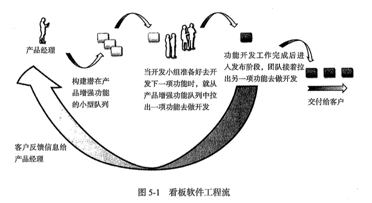

我们通常将软件的实现看做软件开发的最终目标，其实这样是不正确的。软件中人是一种工具，是客户用来达到目标——获得商业价值的一种工具。
精准思想的建立基于以下几个基本原则：
多数错误源于系统本身，因此必须对开发的系统加以改进
为了改进系统，必须尊重员工
过早开始会造成浪费。只在需要的时候完成需要做的事情，这就是所谓的“准时制”或JIT（Just In Time）
精益思想通过消除开发过程中的延误来缩短产品的上市时间；使用JIT方法做事情比让大家一直忙碌更加重要
软件中的浮现式设计：
软件开发中的延误包括：
精益为软件开发提供了7项原则：
尊重人
消除浪费
推迟决策
创建知识
快速交付
品质为先
全局优化
敏捷带给团队和企业的六大益处：
快速提升商业价值
帮助客户明确需求
促进基于知识的产品开发和更好的项目管理
激励团队和允许“早期的失败”（从失败中学习）
重视以产品为中心的开发
提高团队效率
为了改进软件开发方法，必须解决几个重要领域的问题：
确定将要开发或升级的软件产品一定是对公司的盈亏底线影响最大的产品
企业资源与升级产品（项目）要相互匹配
管理项目是以最高的质量和最快的速度去开发产品增强功能
组织软件开发团队，使其以最有效的方式协同工作
使用适当的软件工程方法，该方法既能支持项目管理，又能确保项目的长期可行性，并维持较低的开发成本
营造学习氛围，使过程不断改进
要想在任何领域中成为专家，就需要在已经形成的知识的基础上，不断地添加新原则和新做法。这种更新可能成为某些固有方法论的负担。
管理层并不是项目中的障碍而应该被移走，而是一种资源——可以让整个团队在正确的方向上前进的有利资源。精准—敏捷认为，管理层是具有高效领导能力的某个人，是区别于其他Scrum实践人员认为的那种低下的领导力而言的。
团队真正需要的是，能够以很短的时间组织起所需要的技能去完成工作，可共享的知识越多越好。
切勿超越目前的迭代计划。即使有这种情况产生也不要这么做！在小团队和小项目中，或许还可以这么做，然而，项目越大，这样做变得越困难。迭代列表足以应付复杂的多迭代和多团队素材管理，让项目变得不那么复杂。

迭代0须关注的4个方面的内容：
产品：构建工作基础，使愿景和团队工作的流水线都可视
团队：准备团队需要的知识、技能、工具和过程
环境：安装、配置和测试工具，安排工作间和协作场地，创建可视化过程
架构：定义高级别架构和设计目标，指导商业价值和应急交付与增量交付
迭代0的活动清单：
愿景：产品牵头人为项目和发布计划准备需求陈述，团队理解并同意需求，推动并预计将要生成的发布结果
产品库存：对功能进行优先级排序和评估；制定高层次架构的里程碑
素材评估：分解素材到合适大小；验证关键素材是否理解正确；为首批少量迭代工作评估素材
迭代计划：设定迭代周期；迭代计划建立并可视；开发团队开始致力于实施第一次迭代计划；将素材划分到首批的觉得是迭代计划中
团队：团队由所有必需的角色组成，关注发布并尽可能让团队成员在同一地点工作；团队接受必需的培训；精准—敏捷开发、测试—驱动开发、工程实践；确定可交付的产品（并可视）
测试协议：定义已经确立和文档化（单元测试、集成测试和验收测试）
团队环境：有意识地融合前一次发布学到的经验教训；选择并安装测试、编码、集成和开发工具；为每日的工作完成后勤闪图（时间、工作场所、会议安排、门户网站等）
团队环境：团队生命周期中采用的基本原则已经获得同意；团队工作间已经组织起来（并清理干净）：房间的整理、沟通途径、协调问题的方式；项目委员会已成立；开发环境已经搭建完成并测试完毕；
架构：架构目标及方法已经定义并可视；逻辑关系及风险已经定义并可视；概念上的设计已经完成
发布计划是一种持续性的行为，它是一份对产品愿景进行不断分解，同时重视对企业有较高优先级（价值）功能的计划。产品愿景分解运用的是准时制方法，防止在低优先级和无用的功能上浪费工作。
QA人员不仅承担责任，而且要参与开发工作。
我们的任务是编写代码以更好地满足客户的需求。如果需求尚不清晰，程序员不应该写下哪怕只有一行的代码。因为每行代码都需要花成本去编写，同时又需要花费更多的成本去维护。对开发人员来说，上网冲浪都好过去编写一些根本不需要的代码。如果他们编写的代码根本就没有用，我还必须在系统的整个生命周期——比我的职业生涯还要长的生命周期——为这些代码付费。如果他们只是去上网，那么他们还会玩得开发，而且我也不会在系统维护上花费不必要的成本。